설계자2분 전
기록은 기기에 먼저 저장하고 연결되면 서버와 맞추는 방식을 제안합니다.
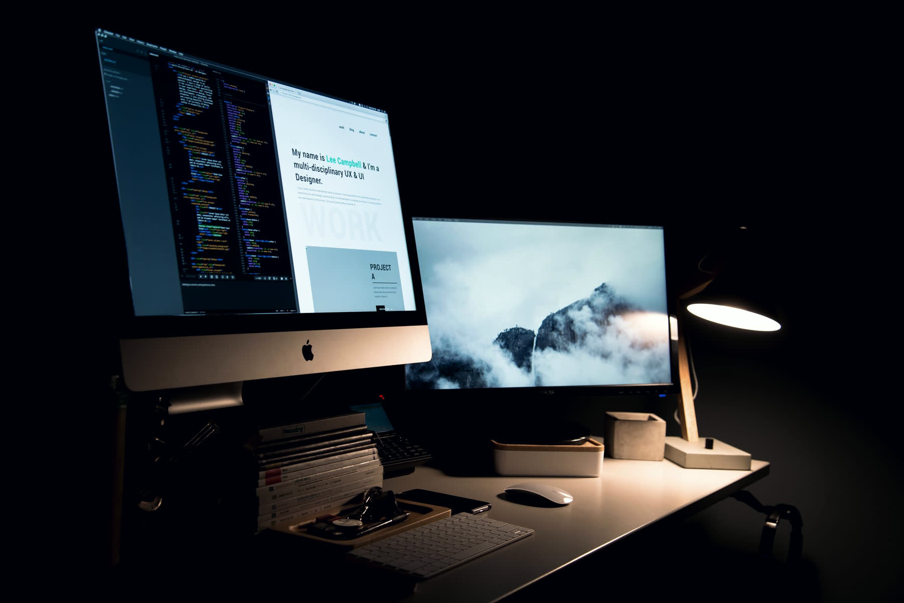
THE PROBLEM
제품 하나를 만들려면 기획자, 디자이너, 개발자가 필요하고, 그 사이에서 결과물을 옮기고 확인하는 일이 끝없이 이어집니다.
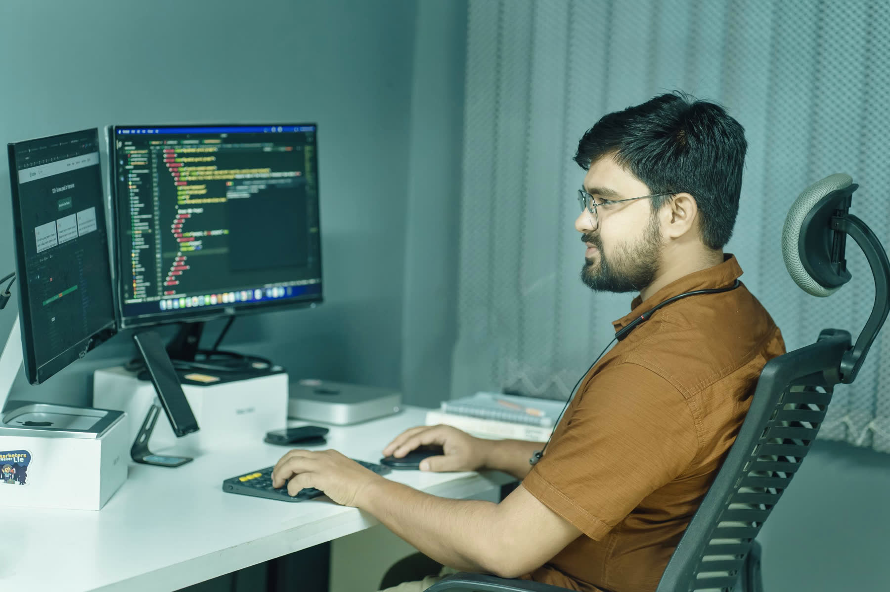
FEATURES
SYNAPSE는 제품을 만드는 전 과정을 하나의 프로젝트 안에서 이어 줍니다.
01 · 요구사항 정의
팀장 AI가 질문을 이어 가며 기능, 화면, 우선순위를 정리합니다. 정리된 목록이 이후 모든 단계의 기준이 됩니다.
운동을 기록하면 AI가 코칭해 주는 앱을 만들고 싶어요
기록할 운동 종류와 코칭 방식을 정리했어요. 우선순위를 확인해 주세요.
REQ-01운동 종류별 기록 입력필수REQ-02주간 운동 시간 요약필수REQ-03기록 기반 코칭 메시지다음 버전02 · AI 팀 협업
팀장, 설계자, 검토자, 시험관이 각자의 관점에서 의견을 내고, 결론과 근거가 프로젝트에 기록으로 남습니다.
설계자2분 전
기록은 기기에 먼저 저장하고 연결되면 서버와 맞추는 방식을 제안합니다.
검토자1분 전
동기화 중 충돌이 나면 어떤 기록을 남길지 기준이 필요합니다.
REQ-01 운동 종류별 기록 입력03 · 디자인 시안
설계자가 만든 화면 시안을 직접 보고 의견을 남깁니다. 시안이 확정되기 전에는 개발이 시작되지 않습니다.
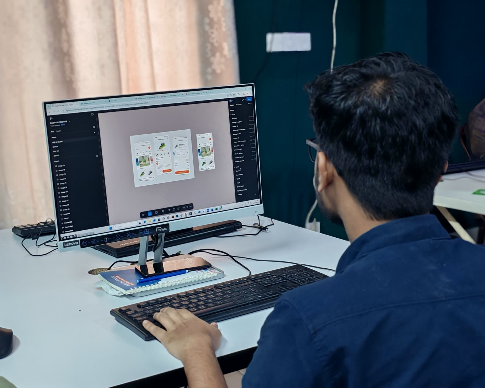
홈확정
기록확정
요약의견 1
04 · 교차 검토와 승인
개발한 AI와 다른 검토자와 시험관이 변경 사항을 확인합니다. 프로젝트에 반영할지는 사람이 승인해서 결정합니다.
설계자 AI가 요청 · 변경 파일 3개 · +24 −6
세트 수가 0이거나 비어 있으면 저장되지 않도록 검증을 추가했습니다.
FROM IDEA TO PRODUCT
스크롤하면 아이디어가 제품이 되는 과정 속으로 들어갑니다
AI TEAM
가운데의 아이디어를 중심으로 역할별 AI와 결과물이 함께 움직입니다. 마우스를 움직이면 궤도가 기울어집니다.
IDEA
“운동을 기록하면 AI가 코칭해 주는 앱”
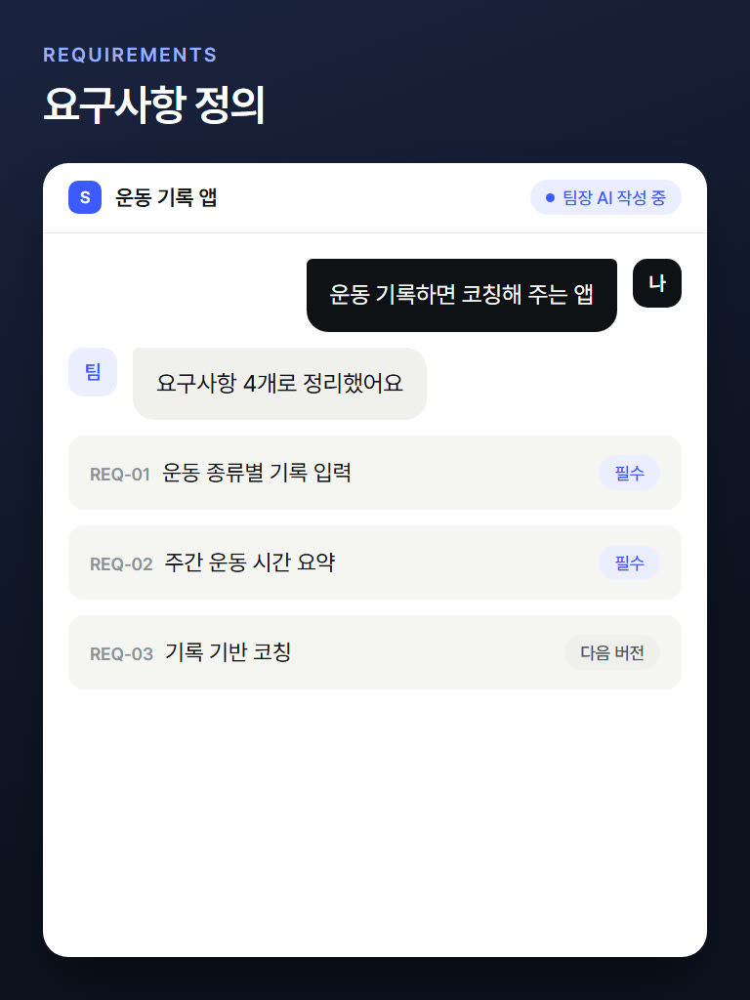
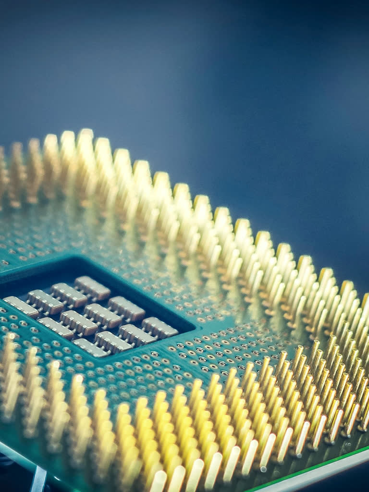
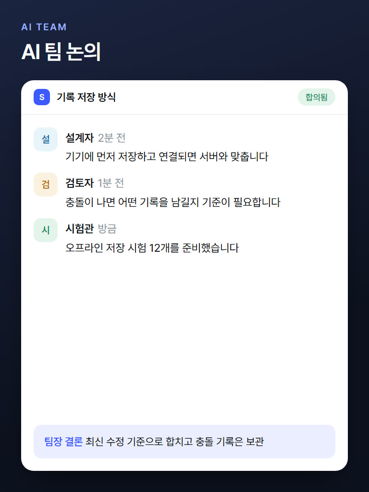
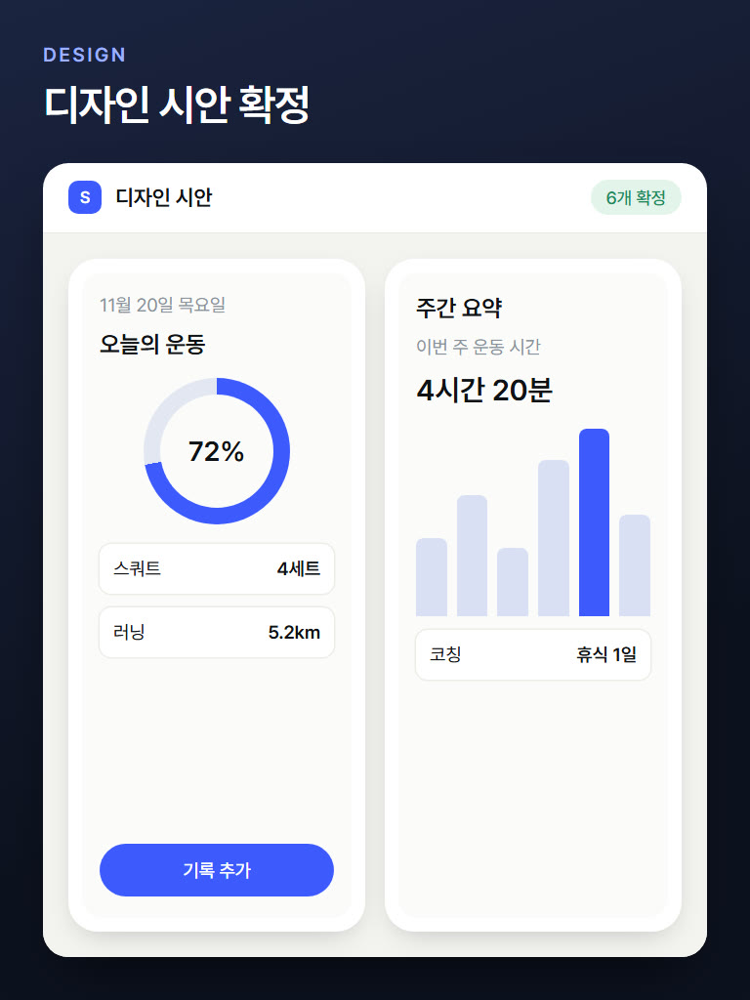
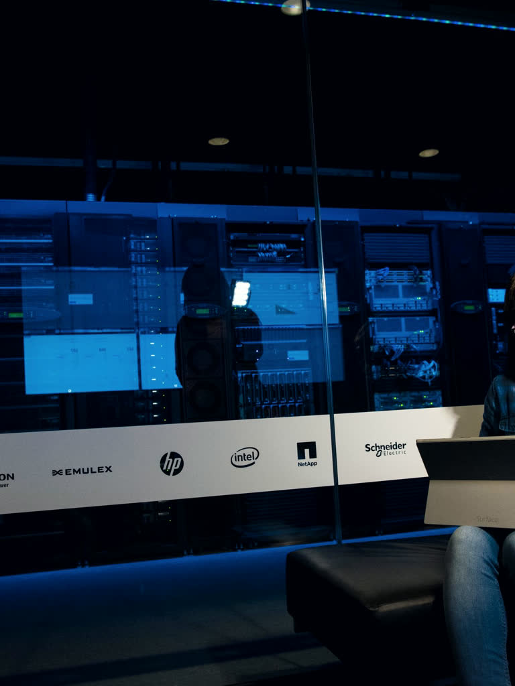
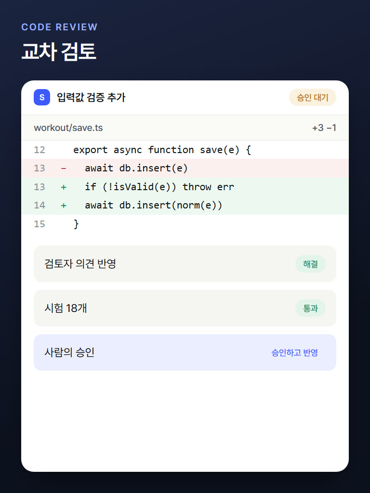
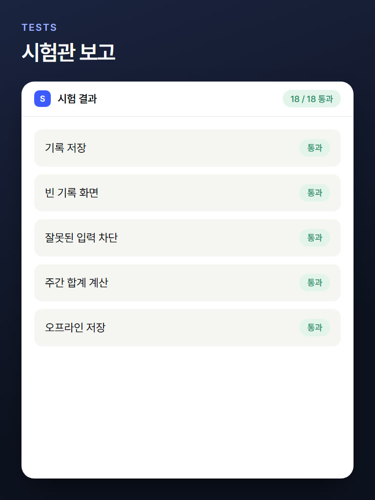
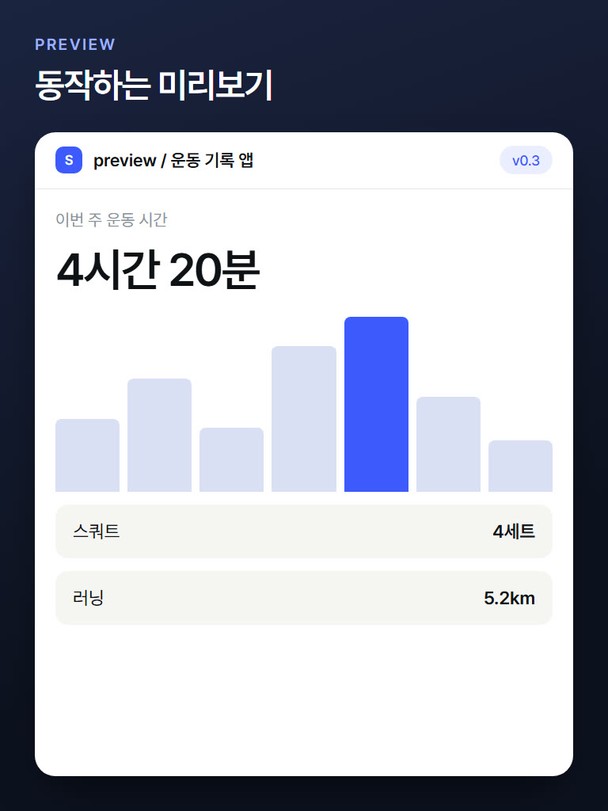
HOW IT WORKS
만들고 싶은 것을 평소 말투로 설명합니다. 팀장 AI가 질문하며 빈 곳을 채웁니다.
결과물 요구사항 목록
설계자가 만든 화면 시안을 보고 고칩니다. 확정해야 다음으로 넘어갑니다.
결과물 확정된 화면 시안
확정된 시안을 기준으로 실제 동작하는 코드를 만들고 미리보기로 보여 줍니다.
결과물 동작하는 미리보기
만든 AI가 아닌 검토자와 시험관이 변경을 확인합니다.
결과물 검토 기록과 시험 결과
모든 변경은 승인 요청으로 올라오고, 반영은 당신이 결정합니다.
결과물 승인된 변경
FOR EVERYONE
시냅스는 연결이라는 뜻입니다. 생각을 가진 사람과 만드는 AI가 하나의 프로젝트로 이어집니다.
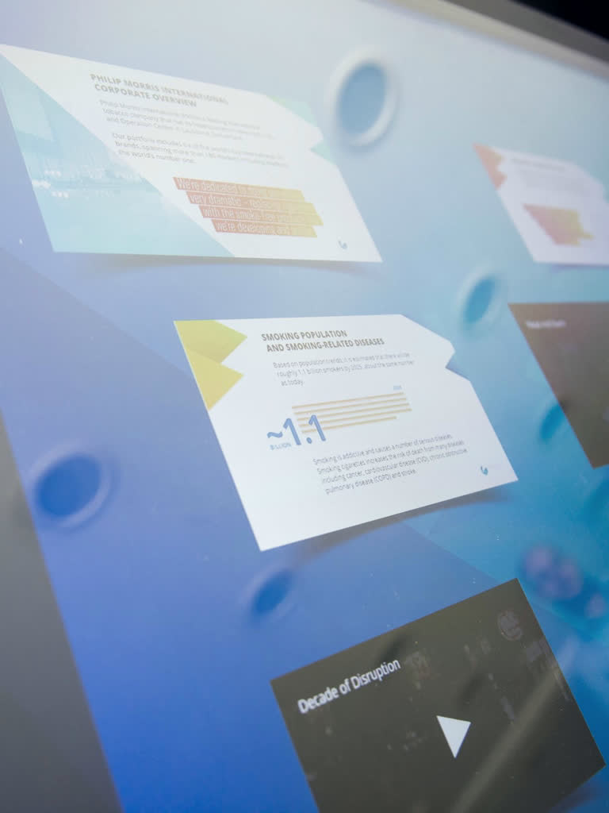
PRINCIPLES
팀장, 설계자, 검토자, 시험관이 각자 맡은 일만 합니다.
코드를 만든 AI는 자기 변경을 승인할 수 없습니다.
프로젝트에 들어가는 변경은 모두 당신이 확인합니다.
FAQ
네. 만들고 싶은 것을 평소 말투로 설명하면 팀장 AI가 질문하며 요구사항으로 정리합니다. 이후에는 시안과 미리보기를 보고 결정하면 됩니다.
웹사이트, 웹 서비스, 모바일 앱, 업무 도구, 데이터 대시보드, 게임 같은 소프트웨어를 하나의 프로젝트로 만듭니다.
코드를 만든 AI가 아닌 검토자와 시험관 AI가 확인하고 의견을 남깁니다. 반영 여부는 사용자가 승인해서 결정합니다.
시안 단계에서 화면마다 의견을 남겨 고칩니다. 시안이 확정되기 전에는 개발이 시작되지 않습니다.
프로젝트 화면에서 단계별 상태, AI별 작업 기록, 승인을 기다리는 변경을 한 번에 봅니다.
정식 출시 때 안내합니다.
START A PROJECT
한 문장이면 팀장 AI가 기획을 시작합니다.